はじめに
この章ではADBインスタンスは作成済みであることを前提に、APEXコンソールの起動から簡単なアプリケーション作成までを体験いただきます。 サンプルとして、これまでExcelで管理していた受発注データを利用して、簡単なアプリケーションを作ってみましょう。
Autonomous Databaseはインスタンスを作成するとすぐにWebアプリ開発基盤であるOracle APEXを利用できるようになります。追加コストは不要です。
Oracle APEXは分かりやすいインターフェースで、コーディングと言った専門的な知識専門的な知識がなくてもアプリケーションを開発できるため非常に人気があります。 Autonomous Database上でAPEXを利用すると、バックアップや可用性、セキュリティ等のインフラの面倒は全てオラクルに任せて、アプリケーションだけに集中できます。
前提条件
- ADBインスタンスが構成済みであること
※ADBインタンスを作成方法については、101:ADBインスタンスを作成してみよう を参照ください。
目次
- 1. スプレッドシートのサンプルを用意
- 2. APEXのワークスペースの作成
- 3. APEXコンソールの起動
- 4. スプレッドシートから簡易アプリケーションの作成
- 5. アプリケーションの実行
- 6. 実行確認
所要時間 : 約10分
1. スプレッドシートのサンプルを用意
サンプルとして受発注データ(orders.csv)を用意します。 下記のリンクをクリックし、サンプルファイル(orders.zip)を手元のPCにダウンロードして展開してください。
受発注データは次のような表になっており、ORDER_KEY(注文番号)、ORDER_STATUS(注文状況)、UNITS(個数) …etc などの列から構成される、5247行の表となっています。
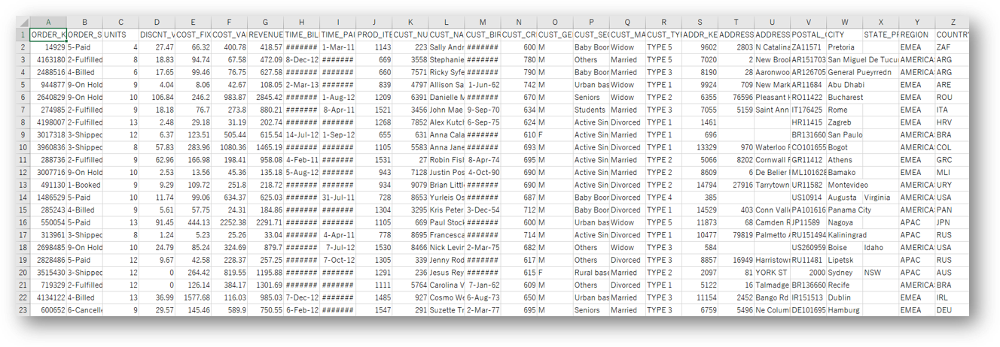
2. APEXのワークスペースの作成
アプリケーションを作成するためには、ワークペースを作成する必要があります。 最初にADMINユーザで管理画面にログインします。
-
ADBインスタンスの詳細画面を表示します。メニュー画面上部の
ツールタブを選択し、APEXを開くをクリックします。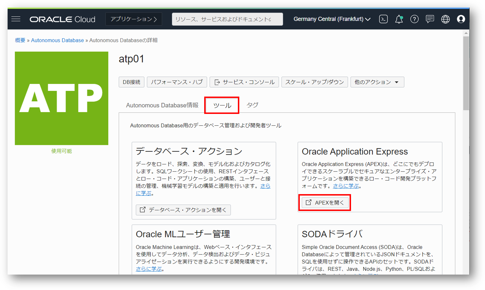
-
ログイン画面が表示されるので、下部の言語欄から
日本語を選択しておきます。（初回は英語表示ですが、日本語を含めた他言語表示に変更することが可能です）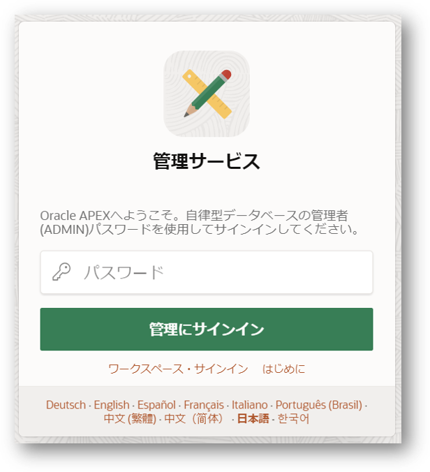
-
ADBインスタンス作成時に指定したADMINユーザのパスワード（本ガイドを参考に作成した方のパスワードは「Welcome12345#」）を入力し、サインインします。
-
ワークスペースの作成をクリックします。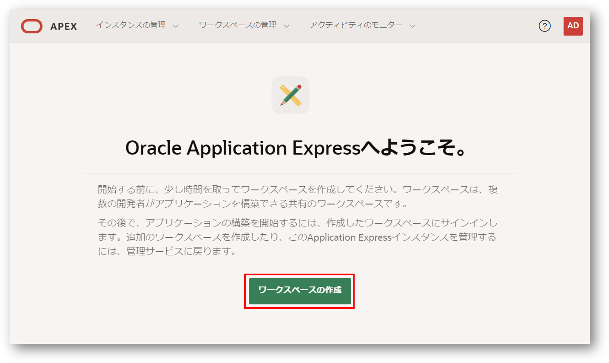
-
以下の記載例を参考に各項目を入力し、最後に
ワークスペースの作成をクリックします。データベース・ユーザー APEX_01 パスワード Welcome12345# ワークスペース名 APEX_01 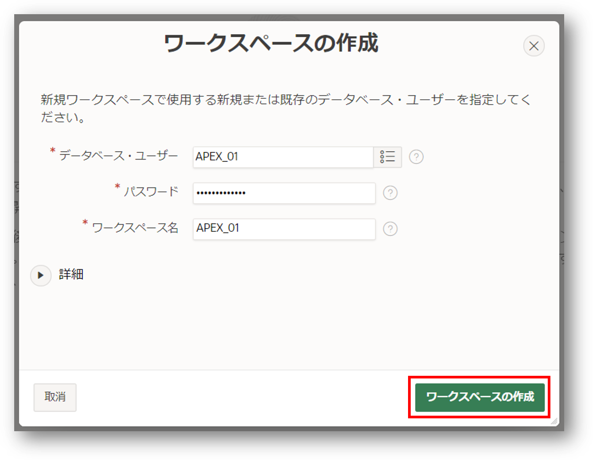
-
ワークスペースが作成されたことを確認します。ページ上部の注意書き通り、アプリケーションの構築を開始するには、管理サービスからサインアウトしてAPEX_01にサインインする必要があります。 右上の
ユーザボタンからサインアウトをクリックし、管理サービスからサインアウトします。 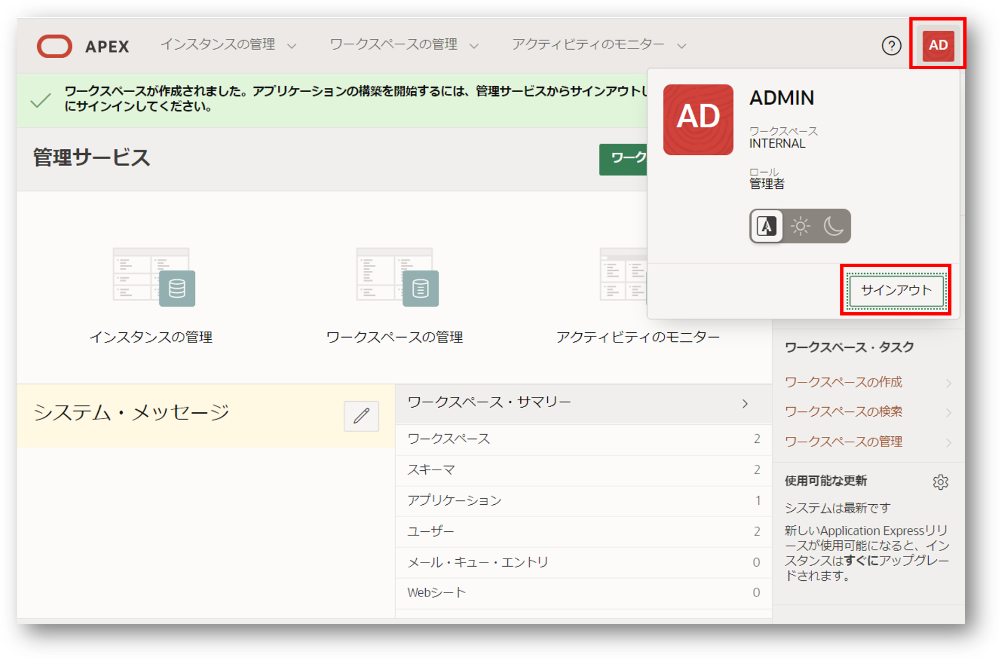
3. APEXコンソールの起動
上記で作成したワークスペース、ユーザーを利用して、Oracle APEX のコンソール画面にログインしてみましょう
-
先程作成したワークスペース、ユーザー、パスワードを指定し、サインイン します。
データベース・ユーザー APEX_01 パスワード Welcome12345# ワークスペース名 APEX_01 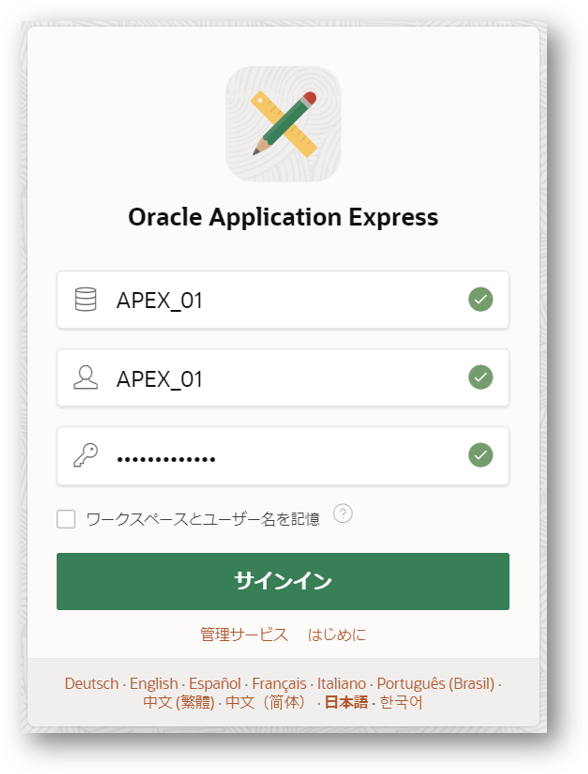
-
APEXコンソールが起動したことを確認します。 ※ この画面のURLを記憶しておけば、次回よりAPEXコンソールに直接ログインできます
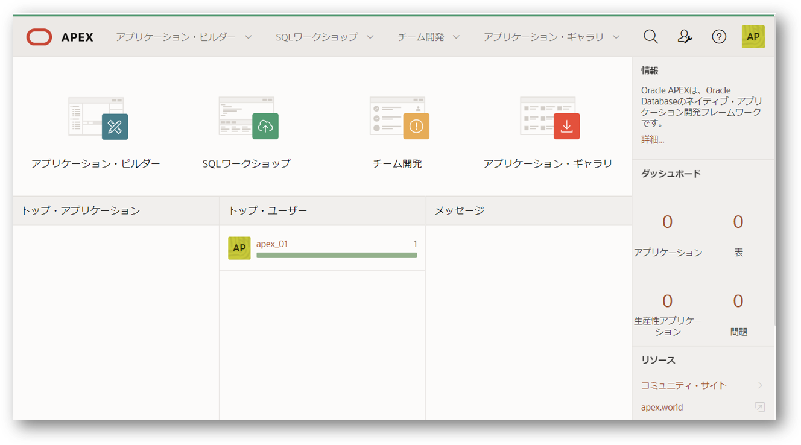
4. スプレッドシートから簡易アプリケーションの作成
手元のスプレッドシート（Excelシート、CSVファイル）から簡易アプリケーションを作成してみましょう
ここでは予めダウンロードして準備しておいたorders.csvファイルを利用して簡易アプリを作ります。
最初にデータベース内にテーブルを作成し、データを入れます。
-
APEXコンソールから
アプリケーション・ビルダーを起動します -
新規アプリケーションの作成をクリックします -
ファイルからをクリックします -
事前に準備しておいた
orders.csvをドラッグアンドドロップします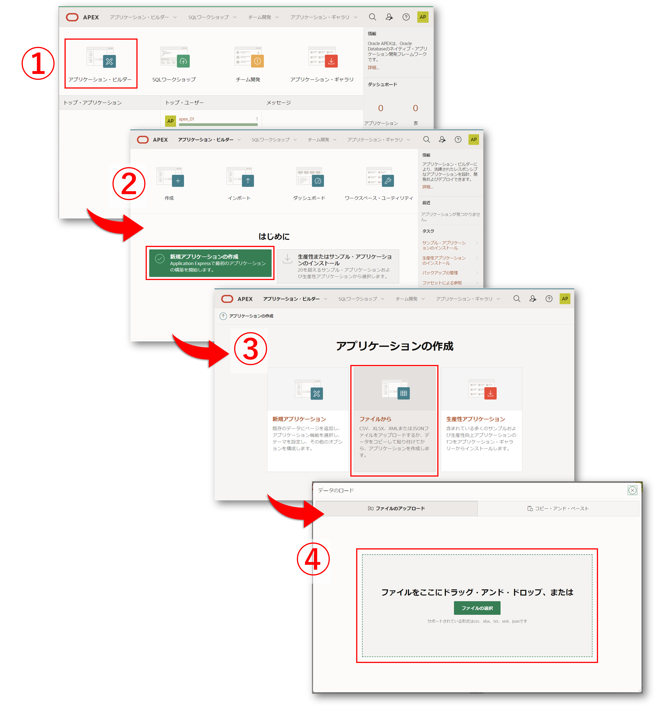
-
表の名前を入力します（ここでは「ORDERS」とします）。※エラー表名は自動的に入力されます。
-
データのプレビューで文字化け等が発生していないことを確認します。
-
データのロードをクリックします。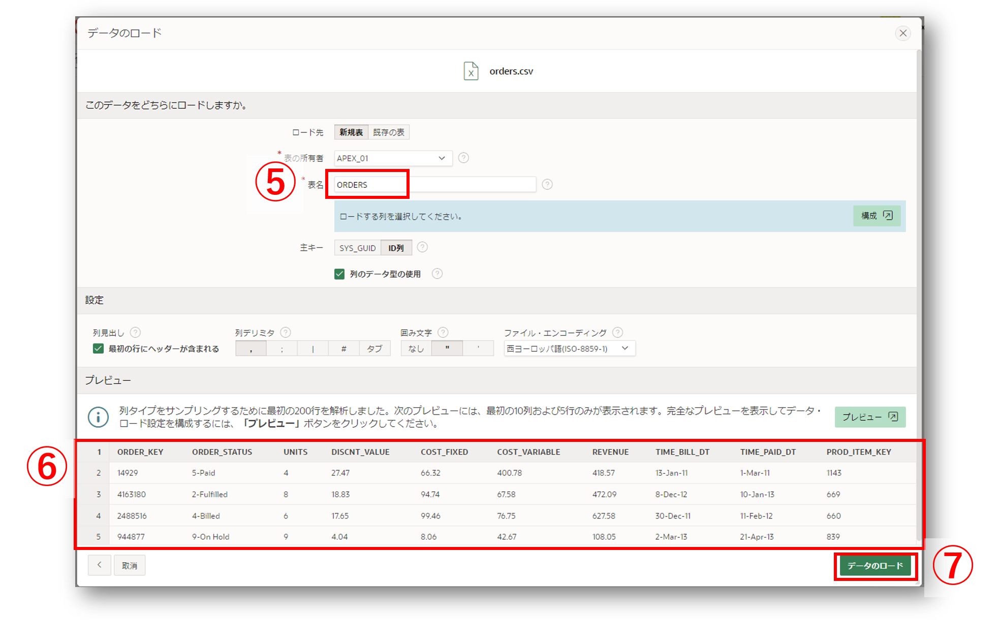
-
ロード完了のメッセージが表示されたら
アプリケーションの作成をクリックします。 ※この時点でDB上にORDERS表が作成されています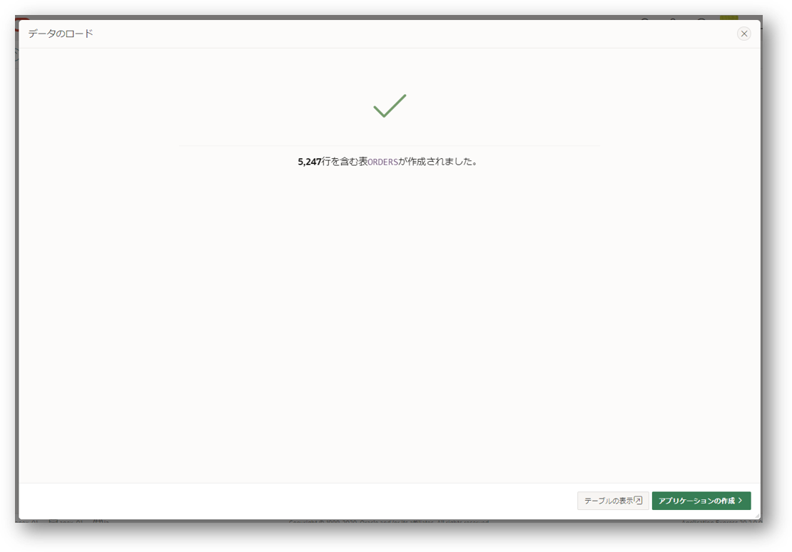
次にCSVファイルから作成されたテーブルを元にしてアプリケーションを作成します。
-
アプリケーションに名前を付けます。今回はテーブル名と同じ
Ordersと入力します。
アプリケーションの作成をクリックします。 （ページの追加や外観の設定、セキュリティの設定等が実施できますが、このハンズオンでは全てデフォルトのまま進めます）
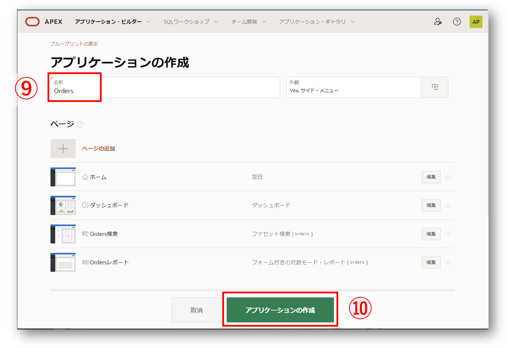
以上でアプリケーションの作成が完了しました。
5. アプリケーションの実行
実際にアプリケーションを起動してみます。
アプリケーションの実行をクリックします。-
ログイン画面に ユーザー名・パスワード を入力し
サインインします。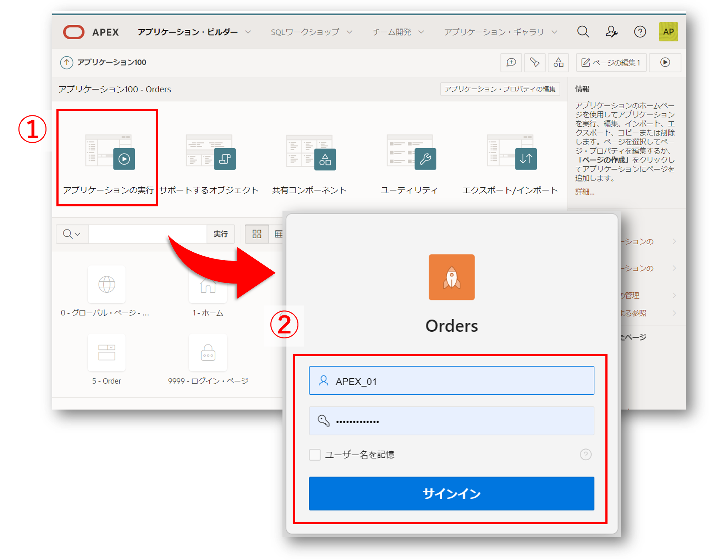
-
ログインが完了すると、画面下端に黒いメニューバーが表示され、ここからアプリケーションの改修作業を実施できます。尚、このメニューバーは、アプリケーション・ビルダーから「アプリケーションの実行」でアプリケーション実行した場合に表示されます。
-
ログイン画面のURLを記憶しておくと、作成したアプリケーションを直接呼び出すことができます。直接呼び出した場合は、画面下端のメニューバーは表示されないので、このURLをアプリ利用者にお渡しいただければ、そのままアプリケーションとしてご利用いただくことができますね。
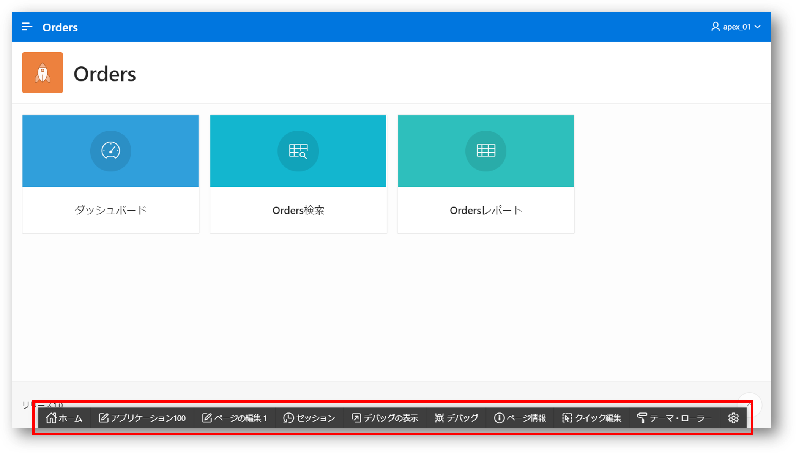
6. 実行確認
作成されたアプリケーションの画面イメージをみていきましょう。
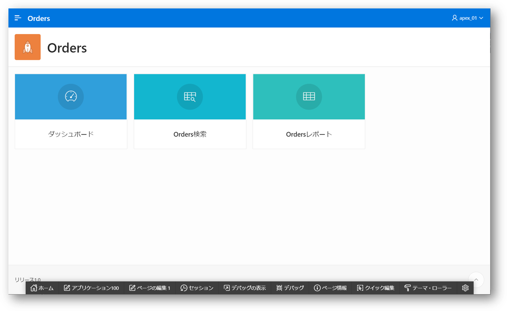
ログインするとトップ画面が表示され、デフォルトでホーム画面（トップ画面）、ダッシュボード画面、検索画面、管理画面（レポート）が表示されます。
今回はすべてデフォルトの設定で作成しましたが、 アプリケーションの作成 の工程で、画面の構成を変えることができます。
各画面のイメージを順に確認していきましょう。
- ダッシュボード
はじめに、ダッシュボードをクリックします。 ダッシュボードでは取り込んだデータをもとに、自動的にグラフとして出力されます。
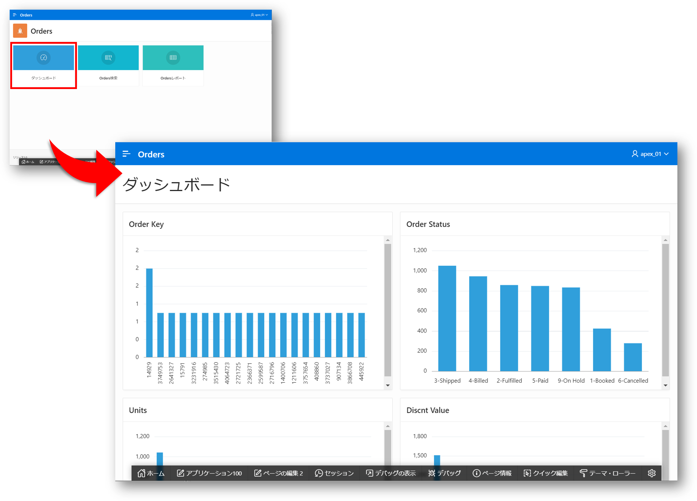
- Orders検索
次に、Orders検索をクリックします。 こちらの機能では、取り込んだデータに対して、カテゴリ別に検索ができるようになっており、行単位でデータを絞り込むことができます。
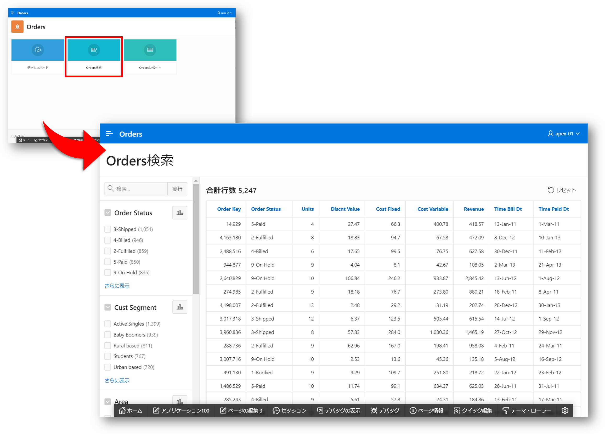
- Ordersレポート
Ordersレポートからは、データを昇順・降順に並び替えることや、特定の列を非表示にすることができます。Orders検索との違いとしては、行単位ではなく列単位で表示を変更することができます。
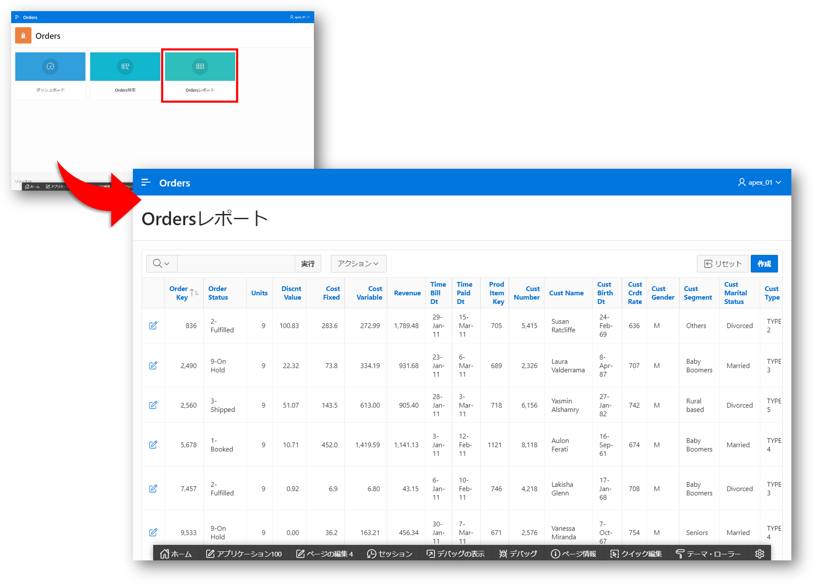
まとめ
たった10分で、データの検索や、レコードの修正＆削除、テーブル内の代表的な列についてダッシュボード的に傾向を確認するといった簡単なアプリケーションが作れます。
はい、たったこれだけです！これだけのステップで従来Excelで管理していたデータを、複数のユーザ、複数の部門で活用することができるようになります。
逆に、「え、これしか作れないの？」と思われた方。。。そんなことはありません。さらに作りこんでいくことはもちろん可能です！以下のまとめサイトから、チュートリアルやユーザ会の資料をご参照ください。
APEX情報まとめサイトは こちら から
以上で、この章は終了です。
次の章にお進みください。